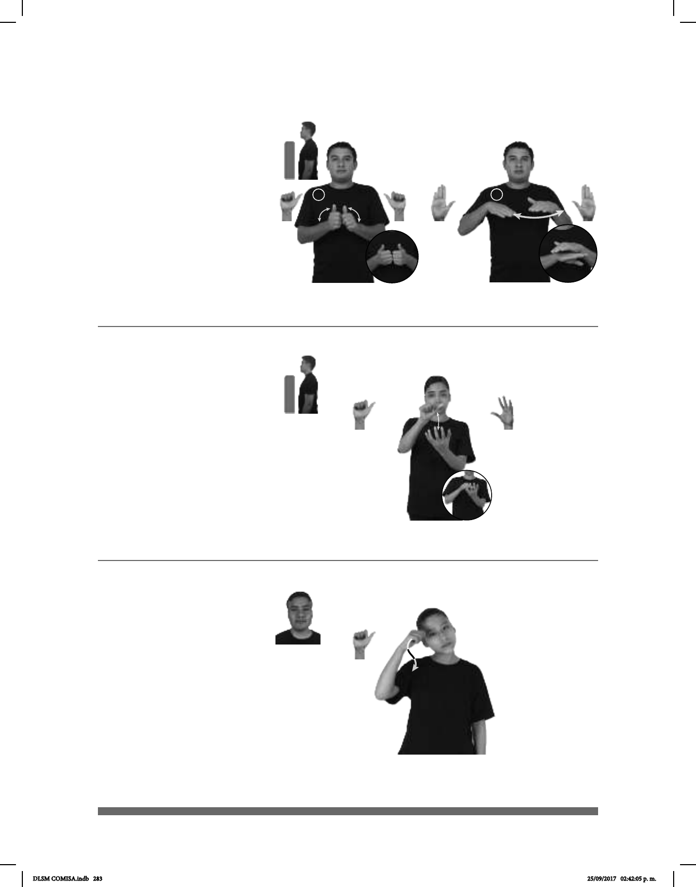

283
1
2
Seña: SC: I. SS; II. SB
I. A.1; II. MD y MB B-P.2
I. Las palmas se encuentran
frente a frente; II. MD y MB palmas hacia
abajo.
I. A la altura del pecho; II. A la
altura del pecho. MD debajo de MB.
I. Las manos parten de un
mismo punto y luego se abren hacia abajo y
hacia los lados sin despegarse
completamente; II. MD se mueve formando
un arco de derecha a izquierda.
sust. f. Lugar o tienda en donde
se elabora y vende pan.
Panadería (A-151)
PANADERÍA YO IR
Yo voy a la panadería.
Seña: SB
MD A.1, MB 5.2
MD la palma inicia hacia afuera
y termina hacia abajo. MB palma hacia arriba.
A la altura del pecho. MD sobre
MB.
Recto hacia atrás repetidamente.
Simula la acción de pelar
una papa.
sust. f. Planta anual de tallos
ramosos, de hasta 60 cm de altura, hojas
tubérculo comestible, carnoso, amarillo por
dentro y cáscara delgada café claro.
Papa (A-152)
pro-YO GUSTAR PAPA
Me gustan las papas.
Seña: SM
A.1
Palma hacia abajo.
Sobre la sien.
La mano sigue la
trayectoria de la Z hacia abajo.
sust. m. Acción o
pensamiento que va en contra de las
leyes de Dios o de los preceptos de
una religión.
Pecado (A-153)
MATAR PECADO
Matar es un pecado.
DLSM COMISA.indb 283 25/09/2017 02:42:05 p. m.